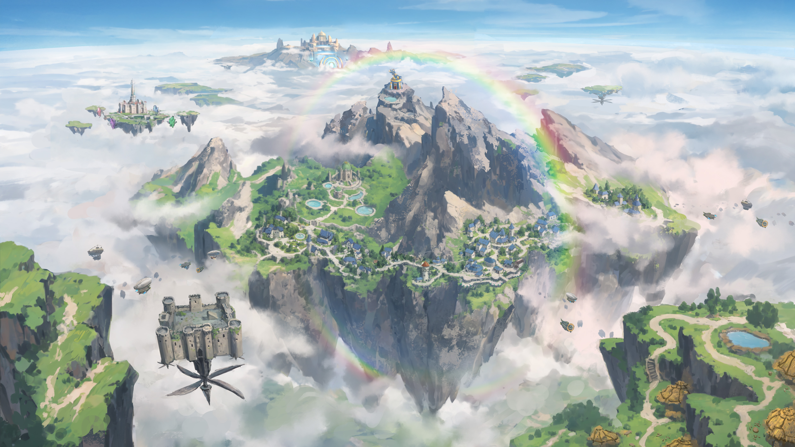
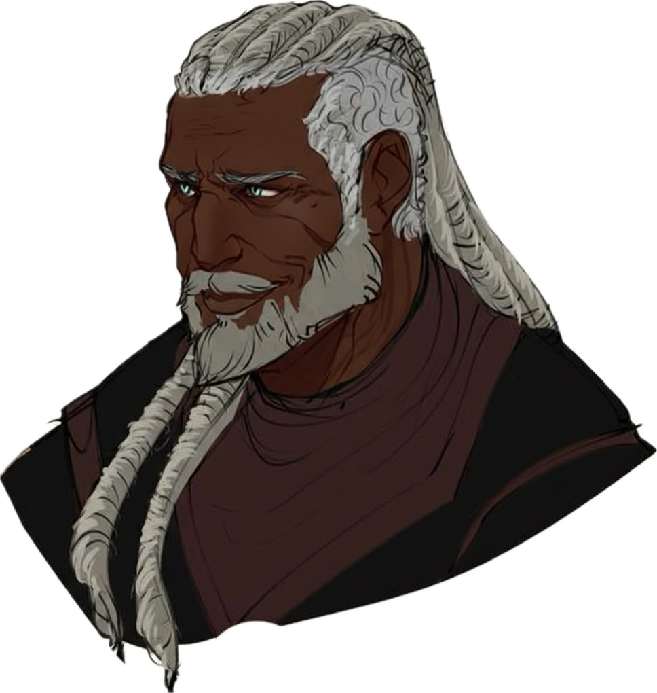
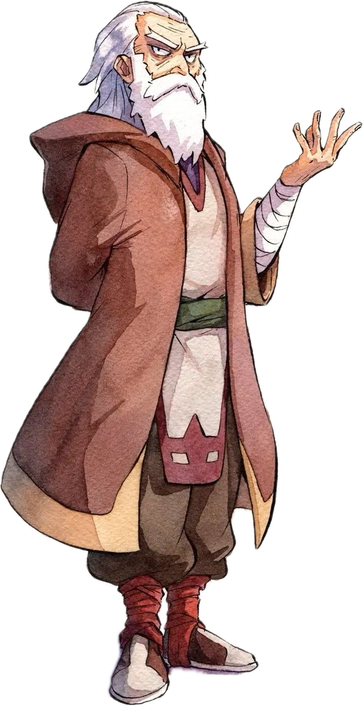
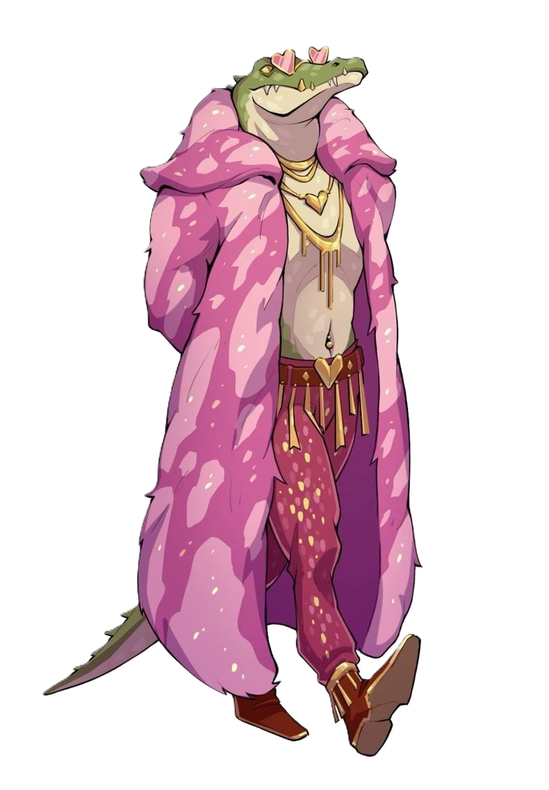
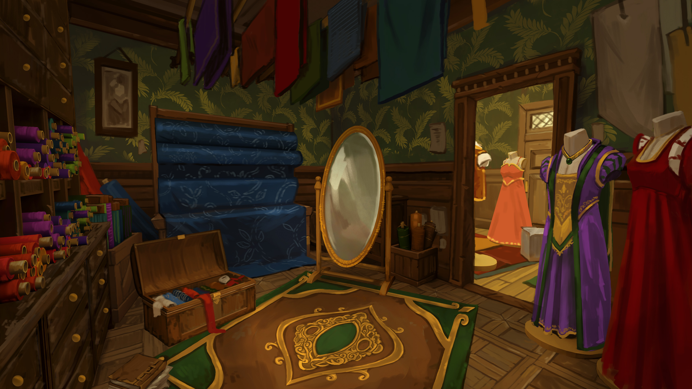
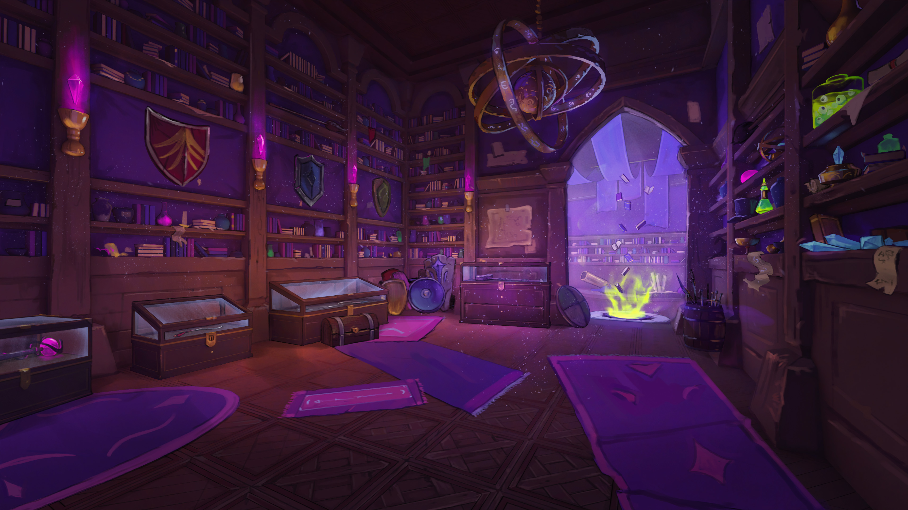
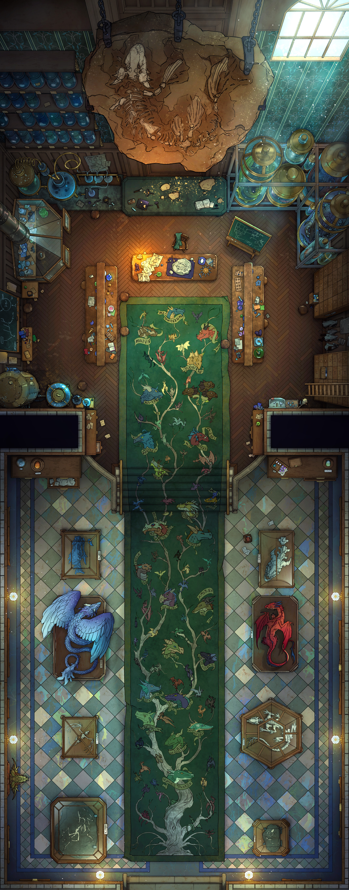
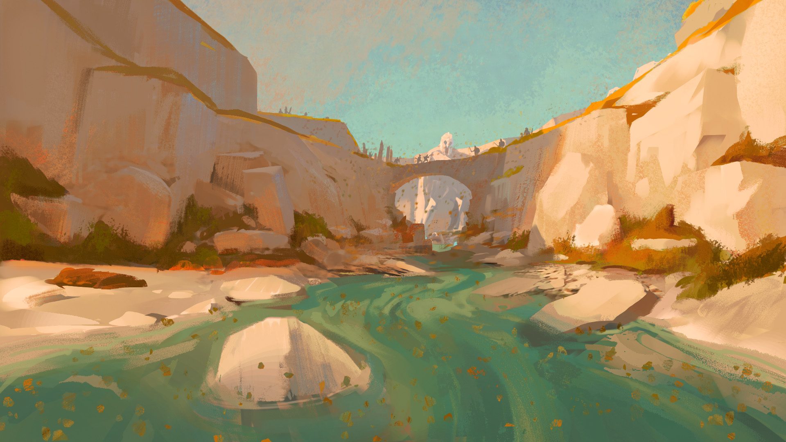
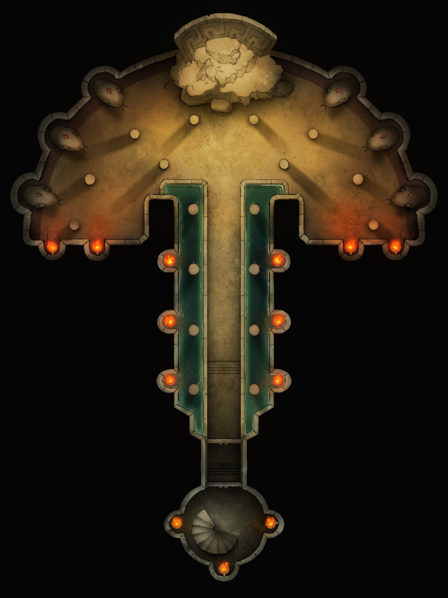

The Statue Heist
An artisan's contest. A stolen legacy. A sleeping horror underneath.
Setting & Location

This adventure starts on the flying collection of islands called The Drifting Crown — where your characters live. The central island, The Crown Gem, is home of the Horizon Keepers.
Your characters are — you decide which — new, aspiring, or veteran members of the famous adventuring guild known as the Horizon Keepers. Our adventure will be a mission of the Horizon Keepers.
An elite adventuring guild entrusted with the most important work within the Drifting Crown. Their duties include:
- Tracking the movements of the drifting islands
- Sending expeditions down to the surface world
- Recovering artifacts and ancient knowledge
- Handling dangerous threats that emerge from the Crown
- Mapping smaller islands before they drift away
Introduction
Months ago, whilst mapping an island now referred to as SoftEarth, explorers made a remarkable discovery — a magically pliable, marble-like substance that surrenders to the intent of whoever handles it. Shape it, leave it undisturbed for a few days, and it hardens to stone with a perfect memory of your vision.
The Horizon Keepers investigated and declared it safe. Now the whole artisanal community of The Drifting Crown is buzzing — bakers, tailors, stoneworkers alike are racing to realise their grandest visions in this extraordinary material.
A contest is underway in the Magister's Market. The finest statues will be displayed in the Horizon Keepers' Library Courtyard for centuries to come. And on this beautiful morning atop the Drifting Crown — several of the most promising statues have disappeared.
Get Inspired
Encourage yourself and your players to connect to the story and characters at the table. You don't have to prep this before the game — during the game, ask yourself and the players: "Would your character know this NPC for any reason? Are you a frequent visitor of the fancy Magister's District?" — "Would your character have been to SoftEarth before for any reason?" — and if so, give the players the knowledge they would otherwise have had to work for, or not have at all.
You DON'T have to know the answer to all questions — just make it up with whatever feels right and believable. Flavor the interactions and the world with whatever feels right at the moment. This world is a gift from you. Modify it to your heart's content.
DM Info — The Truth
Hidden from PlayersKaldorzen is an ancient primordial earth being, imprisoned beneath SoftEarth millennia ago by order of a knightly order. She takes many forms and is always identified by her red glowing eyes. She has the power to give sentience to stone and once led armies that slaughtered thousands in lands far away. She can read minds.
When the island collided with the Drifting Crown Isles, the resulting earthquakes cracked her prison's inner seal — not enough to break the outer magical seal, but enough to wake her and create an entrance wide enough for Gorrath to fit through during an expedition.
Medusa is her sister — together, Medusa turns enemies to stone and Kaldorzen makes them into soldiers.
Kaldorzen can read minds. She found Gorrath's deepest fear — his wife Melandra is gravely ill — and made him a pact: her freedom, in exchange for her curing Melandra.
To free her: Gorrath must bring her statues to build an army large enough to defeat Merandiel Frostborn, the lich guarding the outer seal. He must also bring her Tarin StoneChisel to sculpt that army.
Gorrath stole the Ring of Gravity from the museum's collection, transported the statues overnight via Pete's airship under the guise of archaeological cargo, and kidnapped Tarin. His plan: once Kaldorzen cures Melandra, he runs away with her and never looks back. As long as Melandra lives, he doesn't care if she hates him for what he's done.
The Clock
How quickly players identify Gorrath determines how finished Tarin's dragon is when they arrive:
Race to the dungeon — dragon is debuffed (weakened, partially formed).
He travels with them and takes the long route — dragon is at full health.
NPCs

Tall, dark-skinned, white dreads, dark robes. Anyone who knows Gorrath knows him as a kind, principled man — trusted with powerful artifacts for decades. That reputation is his greatest weapon.
Corrupted by a desperate pact. He stole the Ring of Gravity, transported the statues, and kidnapped Tarin — all to save his dying wife Melandra. He will lie, delay, and misdirect. If cornered, he fights.
See: Museum — Gorrath Fight

Bushy white beard, matching brows, perpetually grumpy expression. Runs the Horizon Keepers with a cluttered desk and a small army of enchanted owls. Sends players on the mission — grumpy but not hostile.
Pale, white-haired, visibly unwell — found seated near the museum entrance wrapped in a shawl. Warmly thanks the players for investigating. Has no idea what Gorrath has done. "He's barely slept, haven't you dear."
Short, messily-tousled red hair, bright blue eyes, stone-dusted leather apron. Sculptor's assistant — she helped Tarin with his secret dragon project. When he vanished she immediately sought out the guards. Frantic and desperate.
"My brother — Tarin — he's missing! He wouldn't just abandon his project. Something must have happened to him."

One of the finest artisans on the Crown — works with Mold Earth and earth spells alongside traditional stoneworking. The armoured gryphon fountain in the Magister's Square is his. His contest piece was being kept secret — assembled in parts, each seen separately by different people.
Held in the boss chamber, forced to sculpt Kaldorzen's dragon. Not corrupted — stops the moment someone reaches him.

Tall, slender half-elf, white moustache, high cheekbones, hair in a manbun. Polite, arrogant, professional. Made a Minotaur for the contest. Sells dragon-shaped eclairs and baguettes shaped like small animals.
"Oui — Tarin got rid of the competition, that's what he did! He'd rather no one win than lose himself. I bet he has those statues in his workshop!"

Purple hair in a comically oversized bun with a ball of wool on sewing needles tucked into it. Corset, flowing dress, heeled martens boots. Made an Owlbear for the contest.
"I don't know who would've taken it — why would they even need one, anyone can make... anyway, if you do find those statues and on your way back lose all but the owlbear... I could find time in my calendar for you."

Half-crocodile beastling with alarming teeth and a habit of hissing mid-sentence. Playful and calculating. His shop looks sandwiched between two buildings — barely wide enough for two people — but opens into a surprisingly large magical space inside.
If players are stuck he offers Speak with Animals or footstep-tracking goggles — on loan, in exchange for a future favour.
Secret: Quietly investigating the secrets of Wysteria.
Chatty, old gnome, messy hair. Deeply unqualified-feeling for someone trusted with an airship. Opens every negotiation high and immediately starts second-guessing himself the moment anyone hesitates.
Remembers taking Gorrath recently: "Oh, Gorrath? Yeah — yesterday, early. Big load of cargo, wouldn't say what. Archaeological dig, he told me. Seemed in a hurry."

Became a lich in pursuit of saving his family — and was tricked. Decided to make something good of his immortal life. Has spent centuries contracted to guard crypts housing dangerous things.
Casts Zone of Truth and asks the party's intention. Those with honest intentions are allowed to pass. "The seal has been broken — somehow another entrance has been opened. Kaldorzen must be awake."
Adventure Flow
Outcome Branches
Players expose Gorrath at the museum — confrontation, possible chase. They race to the dungeon with the location extracted from Gorrath or from Pete. Dragon is debuffed when they arrive.
Gorrath travels with them, guides them the long way. Betrayal happens on the way or at the dungeon entrance. Dragon is at full health. If he runs, he ends up fighting alongside Kaldorzen.
Sealing interrupted — dragon awakens weakened. Scroll can still seal Kaldorzen if players protect the reader long enough.
Kaldorzen escapes. She puts Tarin back to work building a larger army. When it's ready, Gorrath sends it against Merandiel. If she wins that fight, nothing stops her — a campaign-level threat.
Beginning — Corwin's Summons
In the morning, many of the statues are gone. The artisans are going wild — they have been working for days! And Tarin StoneChisel is missing too. The Horizon Keepers' initial assumption: "Perhaps statue-eating monsters? Came over for a midnight snack? Who's to say — we've seen weirder islands come and go. Just handle them."
Ask each player where and how their character is found when their owl arrives. Read the letter aloud for each player, then send the next owl. Keep Corwin grumpy but not hostile — he summons them to his office and gives details there. Use the owl as a cue to move the scene forward: "The owl takes off, heading toward the hill above the Magister's District." Then move to the next player.
The door opens onto a tall, book-lined office where afternoon light spills through two long windows behind a heavy wooden desk. The desk is cluttered with parchment, ink pots, and a small army of owls — some perched on stacks of books, some blinking from the window frame. In the centre sits Corwin, the headmaster, with a bushy white beard and matching brows, his face grumpy as always.
He does not look up. A pale, translucent magical hand moves above the desk, bending letters into tight little scrolls. One by one it seals them with wax, ties each with a pale cord, and passes the finished parcel to a waiting owl.
When the first owl stretches its wings and launches into the air, as it flies through the Drifting Crown looking for your character — where does the owl find you? Please describe your character for us.
Magister's District

The Magister's District opens before you like something out of an old painting — wide cobblestone streets lined with clay-coloured buildings, columns and arched doorways carved with reliefs of figures and creatures you half-recognise. A large town square opens up, surrounded by artisanal shops and buildings. The air smells of warm bread and something else underneath — something earthy and faintly sweet, like fresh soil after rain, but richer.
The square is busy. Dozens of canvas tents fill the space, most still tied shut — statues inside, drying, waiting for their moment. At the centre, a stone gryphon rears up from a fountain, armoured and mid-leap, water running off its wings.
Three tents near the far end catch your eye — their flaps wide open, the sculpting platforms inside bare. Whatever stood on them is gone.
Near the edge of the square, a woman is speaking to two guards in hushed but urgent tones — her hands moving, her voice tight. She hasn't stopped looking around since you noticed her.
Gather clues, identify the missing statues and Tarin's disappearance, and find the trail. Key leads: Alexandra at the guards, Arinath-Pierre and Agnes for suspicious details, Crok Ruthesk at the magic shop. Let players drive — if they get derailed, have Pierre bump into them and destroy a tray of dragon eclairs, demanding payment.
Clues
The statues were not dragged — no drag marks. Perception or Investigation DC 14 — stone fragments near building edges wherever statues were taken, as if something large and heavy grazed the corners while floating. The trail leads north but disappears after a few hundred feet.
Only statues resembling dangerous creatures or weapons are missing. No one else was entering dangerous creatures in the contest.
What Tarin was making was a secret — he assembled parts separately. Some NPCs saw a tail, a wing, a claw. Nobody saw the whole thing.
Crok Ruthesk walks by into his shop. He can offer goggles that show footsteps or a Speak with Animals scroll — on loan, in exchange for a future favour.
NPC Locations



The Museum

All clues point toward the museum and Gorrath — but everything known about Gorrath's character points the opposite direction. Keep the players guessing. When one clue implicates him, remind them how trusted he is. When they start to suspect, give them something else to wonder about. Don't confirm until they force it.
The museum sits at the quieter edge of the Magister's Market — a wide stone building with carved relief panels running along its outer walls, each depicting a different island the Drifting Crown has passed through. Inside, the air is cool and still. Display cases line the walls, filled with relics and artifacts gathered from dozens of expeditions. At the far end, a corridor is sealed off behind a shimmering arcane wall — the words MEDUSA'S MIGHT — ENTRANCE PROHIBITED hang above it in glowing letters.
Near the entrance you see two figures who don't notice you at first — one kneeling beside the other, holding her hand. Seated on a chair is an ordinarily dressed, white-haired, pale-looking woman, visibly weak. Beside her, kneeling, is a tall man in dark robes with black skin and white dreads. They are deep in conversation. Do you let them finish — or interrupt?
Melandra & Gorrath
Melandra greets the players warmly: "Gorrath has been so worried — he's barely slept. Haven't you, dear."
Gorrath dismisses her gently — "You must rest, Melandra, please" — and guides her toward the back before turning to the players. To them: polite, distracted: "Terrible business. I'm sure it'll sort itself out — these things usually do."
Insight DC 13 — he is worried, but not about the statues.
He guides the players toward his study to discuss details in private.
Inside the Museum
Perception or Investigation DC 14 — several empty display mounts. Items are missing — either on Gorrath's person or in his study.
The shimmering arcane wall blocks a side corridor. Arcana DC 12 — it is an illusory barrier, not a force wall. Players can walk straight through.
Inside: two large empty pedestals where the Kaldor & Vorbi HardSteel warrior statues once stood. Along the walls, six petrified humanoids in various poses. A placard reads: "Adventurers lost to the Medusa of Serpent's Nest. The island has since vanished. Kept here in the hope that one day it returns."
History DC 14 — Serpent's Nest was an island the Drifting Crown passed years ago. Without killing the medusa, the petrification cannot be reversed.
Gorrath's Study — Items on His Person
| Item | Notes |
|---|---|
| Ring of Gravity | On Gorrath's hand. 10 ft radius, DC 14 STR save or lifted. Objects up to 2,000 lbs affected automatically. 3 charges, regains at dawn. |
| Lodestone Compass | Always points toward the nearest magical ruin or artifact. |
| Slow Necklace | Casts Slow (DC 16 WIS save). |
| Gauntlet of the Earthshaker | Strike causes 15 ft shockwave, DC 13 STR save or knocked prone, 3d8 on fail. Stone fails automatically. |
| Magical Powder Pouch | Throw or crush: casts Blindness/Deafness or Hold Person. |
| Untouchable Armring | Teleports a player 30 ft in opposite direction (reverse Misty Step). DC 15 WIS save or relocated. |
Gorrath Confrontation
If players present evidence, press him about the ring, or accuse him directly — Gorrath's composure cracks. His default: pivot, not deny. He tells them one of the ruins he surveyed recently seemed unusual — almost like a cracked prison — and offers to take them there himself. His real intention is the long route.
Insight DC 15 (automatic for highest roller) — he is guiding them somewhere, not helping them.
Gorrath tries to slow players down and escape by crashing through a study window. At DM's discretion, run a Chase Skill Challenge. Resource-draining but not deadly. After the fight each item he carries has 1d4/2 charges remaining.
| Round | Action |
|---|---|
| 1 | Uses Slow Necklace (DC 16 WIS save) — catches as many players as possible, then backs away. |
| 2 | Untouchable Armring — teleports a player 30 ft in opposite direction (DC 15 WIS or relocated). |
| 3+ | Shield / Counterspell reactively, tries to disengage and flee. |
| 4 | Powder Pouch — Blindness/Deafness or Hold Person. |
Perception or Investigation DC 15 — one wall panel doesn't quite match. A false door. Behind it: the HardSteel statues crated and ready to move tonight.
If Gorrath escapes: he runs to Kaldorzen's side. If cornered and captured: Intimidation or Persuasion DC 20 to get the dungeon location. Mentioning Melandra or offering to help her lowers it to DC 14.
If players can't get the location from Gorrath, Pete at the airship docks remembers taking him recently.
Pete & The Airship

Pete runs the ship that goes to SoftEarth — transporting explorers, archaeologists, Horizon Keepers. He's not hard to convince, but he will ask for a magic item upfront. He opens high. Any pushback — a raised eyebrow, a sigh, "really?" — and he starts offering to take less. He'll settle for coin, a promise, or a good story. Mention Horizon Keeper business and he folds immediately.
"Oh, Gorrath? Yeah — yesterday, early. Big load of cargo, wouldn't say what. Archaeological dig, he told me. Seemed in a hurry." He can point players to the exact landing spot on SoftEarth.
The island rises out of the clouds slowly — pale and warm, sandstone cliffs catching the morning light like something half-carved. As Pete brings the ship down, you see the rocky terrain up close: cream-coloured, with a faint warmth to it that stone shouldn't have. The air smells of it immediately — that earthy sweetness you noticed back in the square, but stronger. More concentrated.
The ship hovers over a shallow canyon, turquoise water threading between pale boulders below. Somewhere ahead, past a natural stone arch, the cliffs close in. Pete points: "He went that way." He drops the rope ladder. "Should I wait here — or come back?"
The canyon narrows. Lush, dense vines climb and cover the face of a cliff in front of you. The wind picks up — strong enough to whip your hair across your face — and for just a moment the curtain of leaves pulls back. Beneath it: stone. Cut stone. Columns, half-buried in the cliff, carved with symbols you don't recognise. The wind dies. The vines settle back.
The carvings are not decorative. A prayer. Addressed to something beneath the earth.
Temple Entrance
The tomb's outer entrance. Players discover a sacrificial puzzle guarded by Merandiel Frostborn. The lich is not hostile — he evaluates intentions and grants passage if they appear genuine. He points them toward magical items in the first chamber.
The path after the entrance is more cave than construction, but there is a definite route to follow. You go deep into the earth — far enough that you begin to doubt there is an end to this place. Completely dark. No dust. The air is still and silent. There is a disturbing feeling creeping up the back of your neck the deeper you go.
You reach a dead end in a large cavern and find yourself facing giant double doors, tens of feet high. Frescoes line the walls. At the centre, against the far wall, is a statue of an earth elemental: taking a knee, palms upward, holding something up. Before it sits a small brazier, burning with golden magical fire.
Old and cracked — but they tell a story of battle, ending with the imprisonment of the figure in the central statue. The creature takes many different forms across the panels, but every form has the same thing: red glowing eyes, depicted glowing on the frescoes even now.
"You surmise you are standing in the entrance to a prison, meant to keep something — or someone — in."
"If time comes when we can't stand guard — the dead shall guard he who has been locked."
"Only those may pass who prove their worth. Sacrifice that which they hold dear."
The doors are sealed — but the wall beside them is not. A fissure splits the rock, wide enough to squeeze through. The magic holds the lock; the stone did not. This was carved wider by something — wide enough for a large person to fit through. Fresh marks.
The Sacrifice Puzzle
Throwing something of value into the brazier begins the ritual. At DM's discretion — if the sacrifice doesn't feel genuine, roll a percentile or ask for a Persuasion check. As they make the final sacrifice, a lich appears.
Merandiel FrostBorn
Merandiel materialises — calm and deliberate. He casts Zone of Truth and asks their purpose. Those with honest, good intentions are allowed to pass.
"The seal has been broken. Somehow another entrance has been opened. Kaldorzen must be awake — you must move quickly."
He knows where the sealing scroll is and can direct them to the First Chamber.
Chamber 1 — The Oath Room
A ceremonial chamber housing six statues locked in an oath ritual. The central paladin holds a sword inscribed with the sealing instructions. Players must speak an oath to unlock a hidden chamber where magical items and the sealing scroll are stored. The scroll is critical — the only way to seal Kaldorzen after she's weakened.
With an almost deafening sound, the giant stone wall lowers into the floor. Dust stirs — you cover your faces. When it settles, a small chamber opens before you, perhaps the size of the entrance hall, with an open arch leading into a much larger and completely dark space beyond.
This room is illuminated. A golden, soft glow emanates from the eyes of six statues on small pedestals — all pointing their swords inward toward the centre. A paladin who looks carefully recognises this as a ritual — they are taking an oath. But the central paladin holds his sword horizontally, which is very unusual. There is something written on the blade.
"To those who fight for those who can't — tell me your oath and my sword shall yield."
When any party member speaks an oath aloud, a stone door opens in the wall — revealing a small hidden chamber.
The Hidden Room — Magic Items & the Scroll
Inside: magic items laid out on stone tables, some recognisable from the entrance frescoes. And a sealing scroll.
Must be read aloud, uninterrupted, for 3 rounds within 60 ft of Kaldorzen — but only after she is brought to half health. The scroll activates at that moment. Both hands occupied, cannot move, cannot attack, cannot cast. If interrupted for any reason, the round counter resets — it does not pause.
Chamber 2 — The Army
This chamber is completely dark and extremely cold — other than the faintest source of light at the very far end. Anyone have a light source?
This gigantic hall stretches further than your torchlight can reach — tens of feet tall, filled with row upon row of pillar-like pedestals. Atop each one stands a figure. Their arms, their torso — they are not humanoid. They wear no armour. You soon realise what you are looking at: earth elementals. Primordial warriors. Hundreds of them — enough to threaten cities. Kingdoms.
But they are not moving. Each one is encased in ice — thick, pale blue, perfectly smooth. The cold radiates off them in waves. Whatever imprisoned Kaldorzen imprisoned her army alongside her, sealed in the same moment, frozen mid-stance. Some still have their fists raised. Some are mid-step. The ice has held for centuries.
It is still holding. For now.
Nothing attacks here. The ice is immune to all low-level magical damage — instantly evident that whatever created it is beyond conventional means. This chamber is atmospheric. Give the players a moment to feel the scale of what is at stake, then push them toward the light at the far end.
Boss Chamber


The chamber opens up around you — you feel dwarfed by its sheer size, lost in its darkness. The only light comes from a single break in the rock overhead, a beam falling straight to the far end. It illuminates a tiered altar with wide stone steps. At the top: a giant stone dragon, one wing complete, the other a skeleton of half-formed stone. Below the dragon, moving earth like water — Tarin, sculpting.
At the top of the steps, coiled low, a stone serpent. Two glowing orbs of red. A voice booms through the chamber: "You brought the scroll... it seems I'll have to deal with you myself." The red eyes flare. Kaldorzen begins channelling her essence into the stone dragon.
Torches all over the walls flare up one by one — revealing a rocky, devastated cavern, shaken by earthquake, filled with crevices and jagged rocks. Two large figures leap and land between you and Kaldorzen — a stone Owlbear and a stone Minotaur.
Whether he was travelling with the party or arrived separately — here, he reveals himself. He attacks from behind or the flank. If he fled from the museum, he is already at Kaldorzen's side.
Throughout the fight, Kaldorzen reads players' minds and taunts them with what she finds.
Combatants
Owlbear — 57 HP. Resistance: bludgeoning, piercing, slashing from nonmagical attacks. Vulnerability: thunder. Legendary Action: Leap 40 ft — DEX DC 15 or knocked prone and take 1d10 in 10 ft radius.
Minotaur — Resistance: bludgeoning, piercing, slashing from nonmagical attacks. Vulnerability: thunder. Charges recklessly when moving at least 10 ft.
Eruption
Dragon (Kaldorzen's Vessel) — Resistance: bludgeoning, piercing, slashing from nonmagical attacks. Vulnerability: thunder. Replace cold flavour with earth — cold breath becomes stone pillar eruption, cold damage becomes bludgeoning. Lair Action (Initiative 20): one pillar erupts beneath a player — DEX DC 14 or 2d8 bludgeoning and knocked prone.
Gorrath — Mage statblock + 3 legendary actions. Prioritises locking down the scroll-reader. Tries to escape if losing.
Tarin
Tarin is not hostile. He is under duress, not corrupted. The moment someone reaches him and calls out, he stops sculpting. Physically unharmed but shaken — he won't say much at first. Let players lead.
Sealing Mechanic
Once Kaldorzen hits half health, the dragon staggers — a visible crack appears across her chest and golden light bleeds through. The scroll in a player's hand activates and begins glowing. This is the moment.
One player reads the scroll for 3 rounds within 60 ft of Kaldorzen:
— Both hands occupied. Cannot move. Cannot attack. Cannot cast.
— Counter resets on any interruption — does not pause.
— Each successful round: the crack on the dragon widens, light gets brighter.
— The dragon's lair action now specifically targets the reader — stone pillars and walls try to cut them off from the party.
The fight shifts from "kill the dragon" to "protect the reader while finishing the dragon off."
The crack shatters open. A deep vibration through the floor, through everyone's bones. Golden light explodes outward — Kaldorzen's voice cuts off as her essence is pulled screaming back into the prison, like water rushing into a drain. The dragon goes still. Begins to crumble, piece by piece. The torches die one by one.
Ending
The crack tears open. Golden light explodes outward from the dragon's chest, flooding the chamber, and Kaldorzen's voice cuts off as her essence is pulled back into the prison at the far end of the chamber — like water rushing into a drain — until there is nothing left of her. The dragon crumbles, piece by piece. The torches die one by one, until only the pale column of light from the ceiling crack remains.
The sealing re-anchors the prison's magic. The ice in the second chamber holds. The army is not going anywhere — not today.
She's free — but not yet done. To truly escape she needs Merandiel defeated, and her current army isn't enough. She puts Tarin back to work, pulling stone from the island and the ruins. Once the army is ready, Gorrath sends it against Merandiel's forces. If she wins that fight, nothing stops her.
Aftermath
Tarin — physically unharmed but shaken. Doesn't say much at first. If players approach him gently, he'll eventually talk. Let them lead.
The ice army — remains. Kaldorzen's sealing re-anchors the prison's magic and the ice holds. Players may ask what happens to them. The honest answer: someone will have to deal with that eventually. Not today.
Gorrath — Three Branches
He learns from the players that it's over. The pact is void. The cure never came. It lands hard. He cooperates fully and doesn't resist. Whether he faces consequences is a player decision.
When she's pulled back into the prison, his reason to fight vanishes. He stops. Falls to his knees, filled with despair. Everything he did — for nothing. What happens next is up to the players.
Darker ending: The pact is void. Melandra's illness continues. Gorrath got nothing. His betrayal cost everyone and bought him nothing.
Leave it open: The players now know about Melandra. They could seek another way — a lead on the medusa, a healer, something. Gorrath has a reason to cooperate rather than simply collapse. Recommended if you want the door open for a follow-up.
Magic Items
Found in the hidden room off the First Chamber. Some recognisable from the entrance frescoes. Curated specifically to help against Kaldorzen — lightning, force, teleportation, strength.
| d10 | Item | Effect | Charges |
|---|---|---|---|
| 1 | Spear of the Shattered Sky | Throw → lightning storm (15 ft radius, 4d8 lightning, DEX DC 14). Fail: knocked prone. Spear reforms in hand. | 1 use |
| 2 | Orb of Volcanic Ruin | Throw → lava burst (20 ft radius, 5d6 fire + difficult terrain 1 round). | 1 use |
| 3 | Cape of Elusion | Reaction when hit — halve the damage. | 1 use |
| 4 | Stonebreaker Maul | +1 maul. On hit, +2d6 force vs stone creatures/objects. | 3 procs |
| 5 | Ring of Thunder Step | Teleport 90 ft + thunder explosion (3d10 thunder, 5 ft). | 1 use |
| 6 | Potion of Giant Strength (Hill) | STR becomes 21 for 1 hour. | 1 use |
| 7 | Figurine of the Marble Guardian | Summon a Stone Owlbear for 2 rounds. | 1 use |
| 8 | Blade of Echoing Strikes | Spectral echo deals +1d8 damage once per turn. | 5 rounds |
| 9 | Gloves of Shaping Earth | Mold Earth at will; once: stone spike line (3d8). | 1 big use |
| 10 | Horn of the War Titan | All allies gain advantage on attacks for 1 round. | 1 use |
Art Credits
Linked Notes
Notes referenced in this adventure. Click to expand. Hover over any highlighted link in the text to preview.
Monster mage
Mages spend their lives in the study and practice of magic. Good-aligned mages offer counsel to nobles and others in power, while evil mages dwell in isolated sites to perform unspeakable experiments without interference.
Monster minotaur
A minotaur's roar is a savage battle cry that most civilized creatures fear. Born into the mortal realm by demonic rites, minotaurs are savage conquerors and carnivores that live for the hunt. Their brown or black fur is stained with the blood of fallen foes, and they carry the stench of death.
The Beast Within
Most minotaurs are solitary carnivores that roam labyrinthine dungeons, twisting caves, primeval woods, and the maze-like streets and passages of desolate ruins. A minotaur can visualize every route it might take to close the distance to its prey.
The scent of blood, the tearing of flesh, and the cracking of bones spur a minotaur's lust for carnage, overwhelming all thought and reason. In a blood rage, a minotaur charges anything it sees, butting and goring like a battering ram, then chopping the fallen in twain.
Apart from ambushing creatures that wander into its labyrinth, a minotaur cares little for strategy or tactics. Minotaurs seldom organize, they don't respect authority or hierarchy, and they are notoriously difficult to enslave, let alone control.
Cults of the Horned King
Minotaurs are the dark descendants of humanoids transformed by the rituals of cults that reject the oppression of authority by returning to nature. Inductees often mistake these cults for druidic circles or totemic religions whose ceremonies involve entering a labyrinth while wearing a ceremonial animal mask.
Within these bounded environments, cultists hunt, kill, and eat wild beasts, indulging their basest primal urges. In the end, however, sacrificial animals are exchanged for humanoid sacrifice-sometimes an inductee that tried to escape the cult after learning its secrets. These labyrinths become blood-soaked halls of slaughter, echoing to the cultists' savagery.
Unknown to all but their highest-ranking leaders, these mystery cults are creations of the demon lord Baphomet, the Horned King, whose layer of the Abyss is a gigantic labyrinth. Some of his followers are fervent supplicants that plead for strength and power. Others come to the cult seeking a life free from authority's chains-and are liberated of their humanity instead as Baphomet transforms them into the minotaurs that echo his own savage form.
Although they begin as creations of the Horned King, minotaurs can breed true with one another, giving rise to an independent race of Baphomet's savage children in the world.
Monster owlbear
An owlbear's screech echoes through dark valleys and benighted forests, piercing the quiet night to announce the death of its prey. Feathers cover the thick, shaggy coat of its bearlike body, and the limpid pupils of its great round eyes stare furiously from its owlish head.
Deadly Ferocity
The owlbear's reputation for ferocity, aggression, stubbornness, and sheer ill temper makes it one of the most feared predators of the wild. There is little, if anything, that a hungry owlbear fears. Even monsters that outmatch an owlbear in size and strength avoid tangling with it, for this creature cares nothing about a foe's superior strength as it attacks without provocation.
Consummate Predators
An owlbear emerges from its den around sunset and hunts into the darkest hours of the night, hooting or screeching to declare its territory, to search for a mate, or to flush prey into its hunting grounds. These are typically forests familiar to the owlbear, and dense enough to limit its quarry's escape routes.
An owlbear makes its den in a cave or ruin littered with the bones of its prey. It drags partially devoured kills back to its den, storing portions of the carcass among the surrounding rocks, bushes, and trees. The scent of blood and rotting flesh hangs heavy near an owlbear's lair, attracting scavengers and thus luring more prey.
Owlbears hunt alone or in mated pairs. If quarry is plentiful, a family of owlbears might remain together for longer than is required to rear offspring. Otherwise, they part ways as soon as the young are ready to hunt.
Savage Companions
Although they are more intelligent than most animals, owlbears are difficult to tame. However, with enough time, food, and luck, an intelligent creature can train an owlbear to recognize it as a master, making it an unflinching guard or a fast and hardy mount. People of remote frontier settlements have even succeeded at racing owlbears, but spectators bet as often on which owlbear will attack its handler as they do on which will reach the finish line first.
Elven communities encourage owlbears to den beneath their treetop villages, using the beasts as a natural defense during the night. Hobgoblins favor owlbears as war beasts, and hill giants and frost giants sometimes keep owlbears as pets. A starved owlbear might show up in a gladiatorial arena, ruthlessly eviscerating and devouring its foes before a bloodthirsty audience.
Owlbear Origins
Scholars have long debated the origins of the owlbear. The most common theory is that a demented wizard created the first specimen by crossing a giant owl with a bear. However, venerable elves claim to have known these creatures for thousands of years, and some fey insist that owlbears have always existed in the Feywild.
[!quote] A quote from Xarshel Ravenshadow, Gnome Professor of Transmutative Science at Morgrave University > The only good thing about owlbears is that the wizard who created them is probably dead.
Monster young-white-dragon
The smallest, least intelligent, and most animalistic of the chromatic dragons, white dragons dwell in frigid climes, favoring arctic areas or icy mountains. They are vicious, cruel reptiles driven by hunger and greed.
A white dragon has feral eyes, a sleek profile, and a spined crest. The scales of a wyrmling white dragon glisten pure white. As the dragon ages, its sheen disappears and some of its scales begin to darken, so that by the time it is old, it is mottled by patches of pale blue and light gray. This patterning helps the dragon blend into the realms of ice and stone in which it hunts, and to fade from view when it soars across a cloud-filled sky.
Primal and Vengeful
White dragons lack the cunning and tactics of most other dragons. However, their bestial nature makes them the best hunters among all dragonkind, singularly focused on surviving and slaughtering their enemies. A white dragon consumes only food that has been frozen, devouring creatures killed by its breath weapon while they are still stiff and frigid. It encases other kills in ice or buries them in snow near its lair, and finding such a larder is a good indication that a white dragon dwells nearby.
A white dragon also keeps the bodies of its greatest enemies as trophies, freezing corpses where it can look upon them and gloat. The remains of giants, remorhazes, and other dragons are often positioned prominently within a white dragon's lair as warnings to intruders.
Though only moderately intelligent, white dragons have extraordinary memories. They recall every slight and defeat, and have been known to conduct malicious vendettas against creatures that have offended them. This often includes silver dragons, which lair in the same territories as whites. White dragons can speak as all dragons can, but they rarely talk unless moved to do so.
Lone Masters
White dragons avoid all other dragons except whites of the opposite sex. Even then, when white dragons seek each other out as mates, they stay together only long enough to conceive offspring before fleeing into isolation again.
White dragons can't abide rivals near their lairs. As a result, a white dragon attacks other creatures without provocation, viewing such creatures as either too weak or too powerful to live. The only creatures that typically serve a white dragon are intelligent humanoids that demonstrate enough strength to assuage the dragon's wrath, and can put up with sustaining regular losses as a result of its hunger. This includes dragon-worshiping kobolds, which are commonly found in their lairs.
Powerful creatures can sometimes gain a white dragon's obedience through a demonstration of physical or magical might. Frost giants challenge white dragons to prove their own strength and improve their status in their clans, and their cracked bones litter many a white dragon's lair. However, a white dragon defeated by a frost giant often becomes its servant, accepting the mastery of a superior creature in exchange for asserting its own domination over the other creatures that serve or oppose the giant.
Treasure Under Ice
White dragons love the cold sparkle of ice and favor treasure with similar qualities, particularly diamonds. However, in their remote arctic climes, the treasure hoards of white dragons more often contain walrus and mammoth tusk ivory, whale-bone sculptures, figureheads from ships, furs, and magic items seized from overly bold adventurers.
Loose coins and gems are spread across a white dragon's lair, glittering like stars when the light strikes them. Larger treasures and chests are encased in layers of rime created by the white dragon's breath, and held safe beneath layers of transparent ice. The dragon's great strength allows it to easily access its wealth, while lesser creatures must spend hours chipping away or melting the ice to reach the dragon's main hoard.
A white dragon's flawless memory means that it knows how it came to possess every coin, gem, and magic item in its hoard, and it associates each item with a specific victory. White dragons are notoriously difficult to bribe, since any offers of treasure are seen as an insult to their ability to simply slay the creature making the offer and seize the treasure on their own.
A White Dragon's Lair
White dragons lair in icy caves and deep subterranean chambers far from the sun. They favor high mountain vales accessible only by flying, caverns in cliff faces, and labyrinthine ice caves in glaciers. White dragons love vertical heights in their caverns, flying up to the ceiling to latch on like bats or slithering down icy crevasses.
A legendary white dragon's innate magic deepens the cold in the area around its lair. Mountain caverns are fast frozen by the white dragon's presence. A white dragon can often detect intruders by the way the keening wind in its lair changes tone.
A white dragon rests on high ice shelves and cliffs in its lair, the floor around it a treacherous morass of broken ice and stone, hidden pits, and slippery slopes. As foes struggle to move toward it, the dragon flies from perch to perch and destroys them with its freezing breath.
Chromatic Dragons
The black, blue, green, red, and white dragons represent the evil side of dragonkind. Aggressive, gluttonous, and vain, chromatic dragons are dark sages and powerful tyrants feared by all creatures-including each other.
Driven by Greed
Chromatic dragons lust after treasure, and this greed colors their every scheme and plot. They believe that the world's wealth belongs to them by right, and a chromatic dragon seizes that wealth without regard for the humanoids and other creatures that have "stolen" it. With its piles of coins, gleaming gems, and magic items, a dragon's hoard is the stuff of legend. However, chromatic dragons have no interest in commerce, amassing wealth for no other reason than to have it.
Creatures of Ego
Chromatic dragons are united by their sense of superiority, believing themselves the most powerful and worthy of all mortal creatures. When they interact with other creatures, it is only to further their own interests. They believe in their innate right to rule, and this belief is the cornerstone of every chromatic dragon's personality and worldview. Trying to humble a chromatic dragon is like trying to convince the wind to stop blowing. To these creatures, humanoids are animals, fit to serve as prey or beasts of burden, and wholly unworthy of respect.
Dangerous Lairs
A dragon's lair serves as the seat of its power and a vault for its treasure. With its innate toughness and tolerance for severe environmental effects, a dragon selects or builds a lair not for shelter but for defense, favoring multiple entrances and exits, and security for its hoard.
Most chromatic dragon lairs are hidden in dangerous and remote locations to prevent all but the most audacious mortals from reaching them. A black dragon might lair in the heart of a vast swamp, while a red dragon might claim the caldera of an active volcano. In addition to the natural defenses of their lairs, powerful chromatic dragons use magical guardians, traps, and subservient creatures to protect their treasures.
Queen of Evil Dragons
Tiamat the Dragon Queen is the chief deity of evil dragonkind. She dwells on Avernus, the first layer of the Nine Hells. As a lesser god, Tiamat has the power to grant spells to her worshipers, though she is loath to share her power. She epitomizes the avarice of evil dragons, believing that the multiverse and all its treasures will one day be hers and hers alone.
Tiamat is a gigantic dragon whose five heads reflect the forms of the chromatic dragons that worship her-black, blue, green, red, and white. She is a terror on the battlefield, capable of annihilating whole armies with her five breath weapons, her formidable spellcasting, and her fearsome claws.
Tiamat's most hated enemy is Bahamut the Platinum Dragon, with whom she shares control of the faith of dragonkind. She also holds a special enmity for Asmodeus, who long ago stripped her of the rule of Avernus and who continues to curb the Dragon Queen's power.
Dragons
True dragons are winged reptiles of ancient lineage and fearsome power. They are known and feared for their predatory cunning and greed, with the oldest dragons accounted as some of the most powerful creatures in the world. Dragons are also magical creatures whose innate power fuels their dreaded breath weapons and other preternatural abilities.
Many creatures, including wyverns and dragon turtles, have draconic blood. However, true dragons fall into the two broad categories of chromatic and metallic dragons. The black, blue, green, red, and white dragons are selfish, evil, and feared by all. The brass, bronze, copper, gold, and silver dragons are noble, good, and highly respected by the wise.
Though their goals and ideals vary tremendously, all true dragons covet wealth, hoarding mounds of coins and gathering gems, jewels, and magic items. Dragons with large hoards are loath to leave them for long, venturing out of their lairs only to patrol or feed.
True dragons pass through four distinct stages of life, from lowly wyrmlings to ancient dragons, which can live for over a thousand years. In that time, their might can become unrivaled and their hoards can grow beyond price.
**Dragon Age Categories**
| Category | Size | Age Range | |----------|------|-----------| | Wyrmling | Medium | 5 years or less | | Young | Large | 6–100 years | | Adult | Huge | 101–800 years | | Ancient | Gargantuan | 801 years or more | ^dragon-age-categories
Note blindness-deafness
Blindness/Deafness
2nd-level, Necromancy- Casting time: 1 Action - Range: 30 feet - Components: V - Duration: 1 minute
You can blind or deafen a foe. Choose one creature that you can see within range to make a Constitution saving throw. If it fails, the target is either [blinded](/3-Mechanics/CLI/conditions.md#Blinded) or [deafened](/3-Mechanics/CLI/conditions.md#Deafened) (your choice) for the duration. At the end of each of its turns, the target can make a Constitution saving throw. On a success, the spell ends.
At Higher Levels. When you cast this spell using a spell slot of 3rd level or higher, you can target one additional creature for each slot level above 2nd.
Classes: [Cleric (Death Domain)](/3-Mechanics/CLI/lists/list-spells-classes-death-domain-dmg.md "subclass=DMG"); [Fighter (Eldritch Knight)](/3-Mechanics/CLI/lists/list-spells-classes-eldritch-knight.md); [Rogue (Arcane Trickster)](/3-Mechanics/CLI/lists/list-spells-classes-arcane-trickster.md); [Warlock (The Fiend)](/3-Mechanics/CLI/lists/list-spells-classes-the-fiend.md); [Cleric](/3-Mechanics/CLI/lists/list-spells-classes-cleric.md); [Sorcerer](/3-Mechanics/CLI/lists/list-spells-classes-sorcerer.md); [Sorcerer (Divine Soul)](/3-Mechanics/CLI/lists/list-spells-classes-divine-soul-xge.md "subclass=XGE"); [Bard](/3-Mechanics/CLI/lists/list-spells-classes-bard.md); [Druid (Circle of Spores)](/3-Mechanics/CLI/lists/list-spells-classes-circle-of-spores-tce.md "subclass=TCE"); [Wizard](/3-Mechanics/CLI/lists/list-spells-classes-wizard.md)
Source: Player's Handbook p. 219. Available in the SRD
Note counterspell
Counterspell
3rd-level, Abjuration- Casting time: 1 Reaction - Range: 60 feet - Components: S - Duration: Instantaneous
You attempt to interrupt a creature in the process of casting a spell. If the creature is casting a spell of 3rd level or lower, its spell fails and has no effect. If it is casting a spell of 4th level or higher, make an ability check using your spellcasting ability. The DC equals 10 + the spell's level. On a success, the creature's spell fails and has no effect.
At Higher Levels. When you cast this spell using a spell slot of 4th level or higher, the interrupted spell has no effect if its level is less than or equal to the level of the spell slot you used.
Classes: [Paladin (Oath of the Watchers)](/3-Mechanics/CLI/lists/list-spells-classes-oath-of-the-watchers-tce.md "subclass=TCE"); [Fighter (Eldritch Knight)](/3-Mechanics/CLI/lists/list-spells-classes-eldritch-knight.md); [Warlock](/3-Mechanics/CLI/lists/list-spells-classes-warlock.md); [Rogue (Arcane Trickster)](/3-Mechanics/CLI/lists/list-spells-classes-arcane-trickster.md); [Paladin (Oath of Redemption)](/3-Mechanics/CLI/lists/list-spells-classes-oath-of-redemption-xge.md "subclass=XGE"); [Sorcerer](/3-Mechanics/CLI/lists/list-spells-classes-sorcerer.md); [Bard](/3-Mechanics/CLI/lists/list-spells-classes-bard.md); [Wizard](/3-Mechanics/CLI/lists/list-spells-classes-wizard.md)
Source: Player's Handbook p. 228. Available in the SRD and the Basic Rules (2014)
Note hold-person
Hold Person
2nd-level, Enchantment- Casting time: 1 Action - Range: 60 feet - Components: V, S, M (a small, straight piece of iron) - Duration: Concentration, up to 1 minute
Choose a humanoid that you can see within range. The target must succeed on a Wisdom saving throw or be [paralyzed](/3-Mechanics/CLI/conditions.md#Paralyzed) for the duration. At the end of each of its turns, the target can make another Wisdom saving throw. On a success, the spell ends on the target.
At Higher Levels. When you cast this spell using a spell slot of 3rd level or higher, you can target one additional humanoid for each slot level above 2nd. The humanoids must be within 30 feet of each other when you target them.
Classes: [Druid](/3-Mechanics/CLI/lists/list-spells-classes-druid.md); [Cleric (Order Domain)](/3-Mechanics/CLI/lists/list-spells-classes-order-domain-tce.md "subclass=TCE"); [Druid (Circle of the Land)](/3-Mechanics/CLI/lists/list-spells-classes-circle-of-the-land.md); [Warlock](/3-Mechanics/CLI/lists/list-spells-classes-warlock.md); [Rogue (Arcane Trickster)](/3-Mechanics/CLI/lists/list-spells-classes-arcane-trickster.md); [Sorcerer](/3-Mechanics/CLI/lists/list-spells-classes-sorcerer.md); [Sorcerer (Divine Soul)](/3-Mechanics/CLI/lists/list-spells-classes-divine-soul-xge.md "subclass=XGE"); [Bard](/3-Mechanics/CLI/lists/list-spells-classes-bard.md); [Paladin (Oath of Vengeance)](/3-Mechanics/CLI/lists/list-spells-classes-oath-of-vengeance.md); [Fighter (Eldritch Knight)](/3-Mechanics/CLI/lists/list-spells-classes-eldritch-knight.md); [Cleric](/3-Mechanics/CLI/lists/list-spells-classes-cleric.md); [Paladin (Oath of Redemption)](/3-Mechanics/CLI/lists/list-spells-classes-oath-of-redemption-xge.md "subclass=XGE"); [Paladin (Oath of Conquest)](/3-Mechanics/CLI/lists/list-spells-classes-oath-of-conquest-xge.md "subclass=XGE"); [Wizard](/3-Mechanics/CLI/lists/list-spells-classes-wizard.md)
Source: Player's Handbook p. 251. Available in the SRD and the Basic Rules (2014)
Note Ring Of Gravity
Ring of Gravity
Ring, rare (requires attunement)While attuned, you can use an action to choose a point within 60 feet. All creatures and unattended objects within a 10-foot radius of that point begin floating upward at 20 feet per round, to a maximum height of 100 feet.
as bonus action move gravity field & affected objects affected inside, 20ft
Creatures must make a DC 14 Strength saving throw or be lifted. Objects up to 2,000 lbs are affected automatically.
Concentration, up to 1 hour. When concentration ends, all affected creatures and objects fall, taking fall damage as normal and landing prone.
Affected creatures are restrained while floating and can move only 5 feet per round by pushing off nearby surfaces.
The ring has 3 charges and regains all charges at dawn. Each activation expends 1 charge.
Note slow
Slow
3rd-level, Transmutation- Casting time: 1 Action - Range: 120 feet - Components: V, S, M (a drop of molasses) - Duration: Concentration, up to 1 minute
You alter time around up to six creatures of your choice in a 40-foot cube within range. Each target must succeed on a Wisdom saving throw or be affected by this spell for the duration.
An affected target's speed is halved, it takes a −2 penalty to AC and Dexterity saving throws, and it can't use reactions. On its turn, it can use either an action or a bonus action, not both. Regardless of the creature's abilities or magic items, it can't make more than one melee or ranged attack during its turn.
If the creature attempts to cast a spell with a casting time of 1 action, roll a `d20`. On an 11 or higher, the spell doesn't take effect until the creature's next turn, and the creature must use its action on that turn to complete the spell. If it can't, the spell is wasted.
A creature affected by this spell makes another Wisdom saving throw at the end of each of its turns. On a successful save, the effect ends for it.
Classes: [Cleric (Order Domain)](/3-Mechanics/CLI/lists/list-spells-classes-order-domain-tce.md "subclass=TCE"); [Druid (Circle of the Land)](/3-Mechanics/CLI/lists/list-spells-classes-circle-of-the-land.md); [Fighter (Eldritch Knight)](/3-Mechanics/CLI/lists/list-spells-classes-eldritch-knight.md); [Rogue (Arcane Trickster)](/3-Mechanics/CLI/lists/list-spells-classes-arcane-trickster.md); [Sorcerer](/3-Mechanics/CLI/lists/list-spells-classes-sorcerer.md); [Bard](/3-Mechanics/CLI/lists/list-spells-classes-bard.md); [Wizard](/3-Mechanics/CLI/lists/list-spells-classes-wizard.md)
Source: Player's Handbook p. 277. Available in the SRD